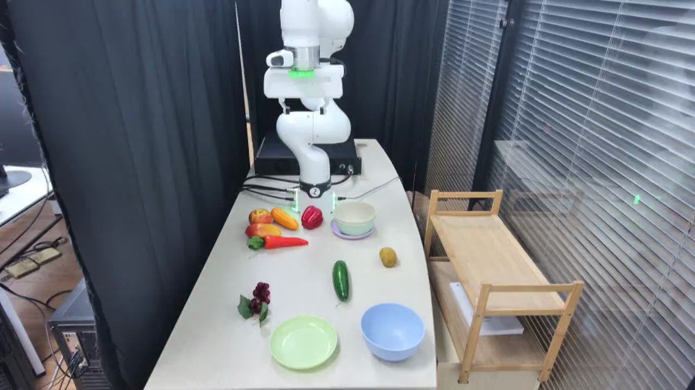

TAVP · 007_franka_collect_fruits_failure_case_failure
Franka collect fruits failure case failure

Annotation
From the dedicated visual review of this video (concise_action_v1). Plain text · JSON
Chronology
| Frames | Observation |
|---|---|
| 0–260 | The raised open gripper moves down and forward from the rear of the table, approaching the green cucumber-shaped object and bringing the fingers to its sides. |
| 261–406 | The gripper closes around the green object while it remains close to the table surface, holding it during a prolonged pause. |
| 407–540 | The arm lifts the securely grasped green object off the tabletop, briefly holds it above its original area, then begins carrying it toward the blue bowl. |
| 541–631 | The arm carries the green object forward-right and lowers it into the blue bowl while retaining the grasp. |
| 632–736 | The fingers open, releasing the green object into the blue bowl. It settles lying diagonally inside; the open gripper pauses above it. |
| 737–756 | The empty open gripper rises clear of the bowl, completing the first placement. |
| 757–879 | The arm moves back toward the yellow oval object and lowers its open gripper toward it for a separate pickup attempt. |
| 880–917 | One fingertip contacts the yellow object from above/left as the gripper lowers and closes without capturing it. The yellow object rolls or shifts to the right of the empty gripper and remains on the tabletop; no second lift or placement occurs before the video ends. |
Uncertainties
- The exact produce identities and whether these objects are real food or props are not established visually; descriptions use visible shape and color.
- The folder labels the complete video as failure, but the first green-object placement visibly succeeds; the subsequent yellow-object grasp is unsuccessful.
- Stage frame boundaries are approximate; the retained endpoint was checked in native frame 756 after release and brief withdrawal.
Complete review record action_review.json
{
"video_id": "007",
"review_method": "Visual inspection of every second decoded frame across the entire MP4 plus native-resolution transition frames, followed by native initial PNG",
"review_source_video": "/Users/nijiachen/Downloads/Robotvideo/TAVP/007_franka_collect_fruits_failure_case_failure/original/video.mp4",
"source_frame_count": 918,
"source_fps": 30.0,
"inspected_frame_stride": 2,
"inspected_sampled_frame_count": 459,
"reviewed_contact_sheets": [
"sheet_001.jpg",
"sheet_002.jpg",
"sheet_003.jpg",
"sheet_004.jpg",
"sheet_005.jpg",
"sheet_006.jpg",
"sheet_007.jpg",
"sheet_008.jpg"
],
"native_detail_frames": [
100,
180,
260,
340,
380,
400,
440,
520,
555,
600,
640,
660,
680,
728,
742,
756,
790,
860,
880,
890,
900,
910,
917
],
"initial_scene": "A white articulated arm with a parallel gripper is raised over the rear of a light rectangular table. A green elongated cucumber-shaped object lies near the center, a yellow oval object lies to its rear-right, and a grape cluster is front-left. An empty pale green plate is at front-center-left and an empty blue bowl is at front-right. Several red, orange and yellow produce-shaped objects are grouped at rear-left; a pale green bowl rests on a lavender plate behind the central objects. Dark curtains surround the rear and left, with window blinds and a wooden two-tier stand on the right.",
"observed_sequence": [
{
"start_frame": 0,
"end_frame_inclusive": 260,
"action": "The raised open gripper moves down and forward from the rear of the table, approaching the green cucumber-shaped object and bringing the fingers to its sides.",
"confidence": "high"
},
{
"start_frame": 261,
"end_frame_inclusive": 406,
"action": "The gripper closes around the green object while it remains close to the table surface, holding it during a prolonged pause.",
"confidence": "high"
},
{
"start_frame": 407,
"end_frame_inclusive": 540,
"action": "The arm lifts the securely grasped green object off the tabletop, briefly holds it above its original area, then begins carrying it toward the blue bowl.",
"confidence": "high"
},
{
"start_frame": 541,
"end_frame_inclusive": 631,
"action": "The arm carries the green object forward-right and lowers it into the blue bowl while retaining the grasp.",
"confidence": "high"
},
{
"start_frame": 632,
"end_frame_inclusive": 736,
"action": "The fingers open, releasing the green object into the blue bowl. It settles lying diagonally inside; the open gripper pauses above it.",
"confidence": "high"
},
{
"start_frame": 737,
"end_frame_inclusive": 756,
"action": "The empty open gripper rises clear of the bowl, completing the first placement.",
"confidence": "high"
},
{
"start_frame": 757,
"end_frame_inclusive": 879,
"action": "The arm moves back toward the yellow oval object and lowers its open gripper toward it for a separate pickup attempt.",
"confidence": "high"
},
{
"start_frame": 880,
"end_frame_inclusive": 917,
"action": "One fingertip contacts the yellow object from above/left as the gripper lowers and closes without capturing it. The yellow object rolls or shifts to the right of the empty gripper and remains on the tabletop; no second lift or placement occurs before the video ends.",
"confidence": "high"
}
],
"multi_step": true,
"selected_execution_status": "success",
"selected_segment": {
"start_frame": 0,
"end_frame_exclusive": 757,
"reason": "Retains the first completed independent manipulation: the green object is picked up, released into the blue bowl, and the empty gripper briefly withdraws. Ends before the separate yellow-object pickup attempt.",
"terminal_state": "The green cucumber-shaped object rests diagonally inside the blue bowl, with the empty open gripper lifted clear above it; the yellow object remains in its original tabletop position."
},
"full_sequence_prompt": "The robotic arm picks up the green cucumber-shaped object and places it inside the blue bowl, then attempts to grasp the yellow oval object but nudges it aside, leaving it on the tabletop. Keep the camera fixed; preserve robot geometry, physically valid joint motion, and normal gripper opening and closing.",
"world_model_prompt": "The robotic arm picks up the green cucumber-shaped object and places it inside the blue bowl. Keep the camera fixed; preserve robot geometry, physically valid joint motion, and normal gripper opening and closing.",
"uncertainties": [
"The exact produce identities and whether these objects are real food or props are not established visually; descriptions use visible shape and color.",
"The folder labels the complete video as failure, but the first green-object placement visibly succeeds; the subsequent yellow-object grasp is unsuccessful.",
"Stage frame boundaries are approximate; the retained endpoint was checked in native frame 756 after release and brief withdrawal."
],
"evidence_frame_indices": [
0,
260,
440,
555,
640,
756,
890,
917
],
"prompt_provenance": "visually_authored_from_video_and_initial_frame",
"prompt_protocol": "concise_action_v1",
"review_source_original_video": "007_franka_collect_fruits_failure_case_failure/original/video.mp4",
"review_source_crop_rectangle": null
}